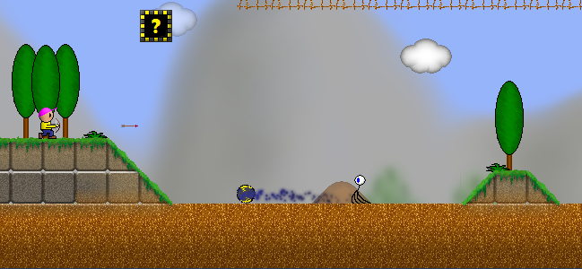
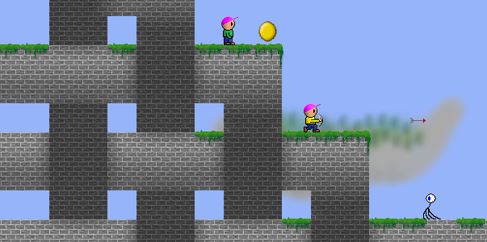
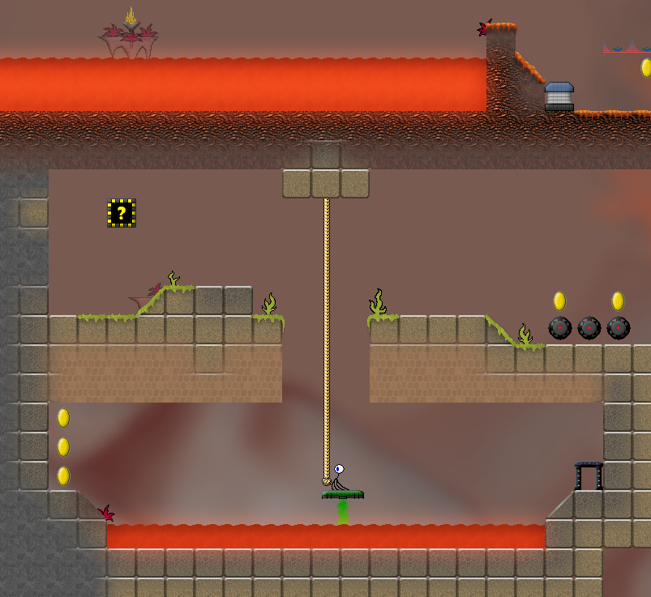

Zloxx II
Zloxx II is a 2D Jump'n'Run in which you control a little character called Zloxx. Your goal is to find your way through numerous levels, while taking up coins, power-ups, new weapons and special suits that help you in the battle with different enemies.
The gameplay is easy to understand, the basic mechanisms are explained during playing. However, there are still enough things you have to find out by yourself. The game becomes more and more challenging after completing the first few levels.
Take a look at some screenshots of the game. They are only intended to give you a rough impression, of course there is much more to discover ;)



Download
Latest version: